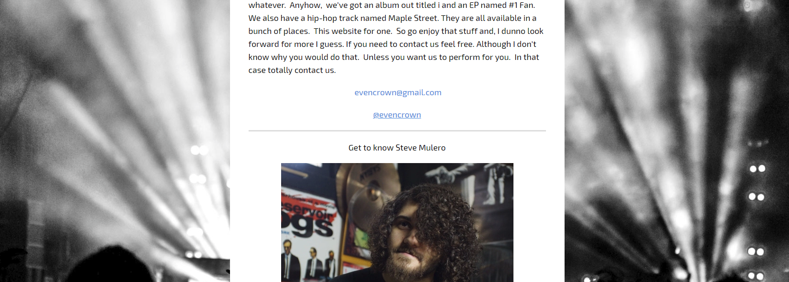

Who I am:
Dedicated professional with demonstrated strengths in customer service, time management, and web design. Consulted for customers in C-Level positions across a myriad of industries to build solutions and improve workflows. Excellent verbal and written communicator with strong background cultivating positive relationships and exceeding expectations. Always happy to lift others up to help them succeed and grow.
Skills
|
Soft-Skills
|
- A creative mind and an eye for design
- Workflow & Time Management
- Public Speaking & In-class Training
- Written & Verbal Communications
- Photography – lighting, posing, retouching
|
|
Applications
|
Scripting Languages
|
• MS Office
• iCIMS
• Adobe CC
• Quark Xpress
• Sublime Text
• Sketch App
|
• HTML
• CSS
• SQL
• JSON
• JavaScript
|
Relevant Work History
iCIMS, Senior Design Support
- Design branding on customer’s career sites to be compatible with iCIMS Career portals, ensuring functionality on all browsers and devices.
- Work with customers to find the best solution for a variety of forms in terms of design, workflow, and coding.
- Assist Co-workers in their roles to better manage workflows, and assist in balancing the workload across the team.
- Built out in-class and virtual training to be used by new hires and existing employees.
- Communicated directly with internal and external stakeholders to scope and plan projects relating to the building and implementation of new forms for the iCIMS system, including Applications, Government forms, and Financial forms.
- Innovated and pushed the limits of the internal iCIMS system to better present forms for easier use and better brand representation.
- Worked on projects to streamline and simplify the process of internal article searching.
iCIMS Technical Support Engineer
- Assist customers with every aspect of the iCIMS platform
- Provide customers with support and consult on best processes and practices for using the iCIMS platform.
- Troubleshoot basic and advanced issues in the iCIMS platform
- Identifying technical issues and process issues within the iCIMS platform.
- Assist team mates in their roles through training and being a technical knowledge resource
Reynolds & Reynolds Co. - Graphic Designer
- Handle shipping, receiving and customer contacts.
- Troubleshoot PC issues, interact with clients, and handle cash transactions.
- Perform basic repairs on Personal Computers (Hardware + Software).
Notable Projects

Though no longer hosted, designed and constructed the web site for the band Evencrown. This included multiple pages, social media integrations, and server side file management.
Designed branding assets, advertisements, and photographed product for Hilda's Attic, LLC.
Built this entire resume page from the ground up. Utilized online resources to supplement knowledge gaps and troubleshoot issues.